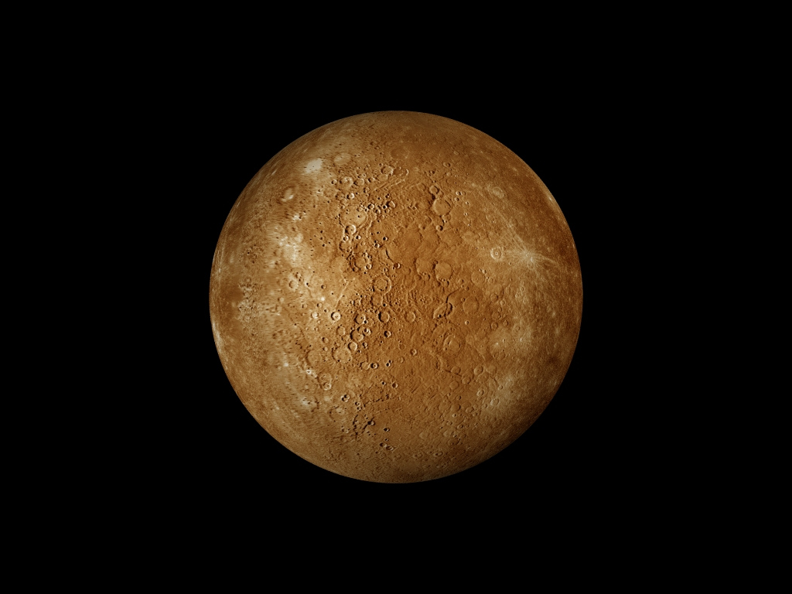
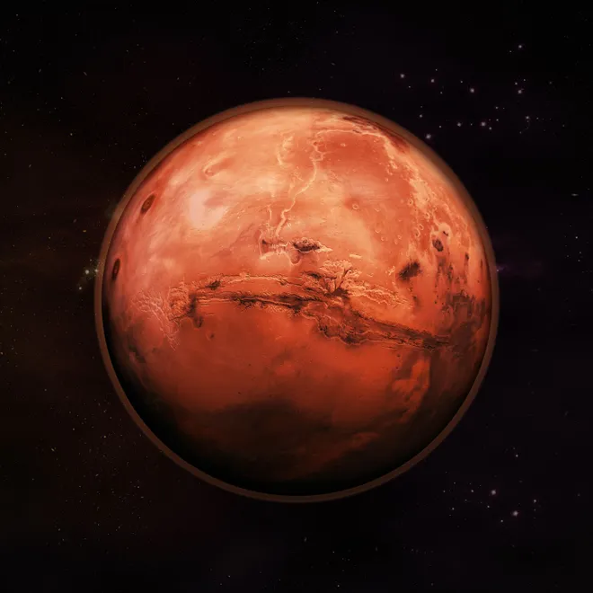
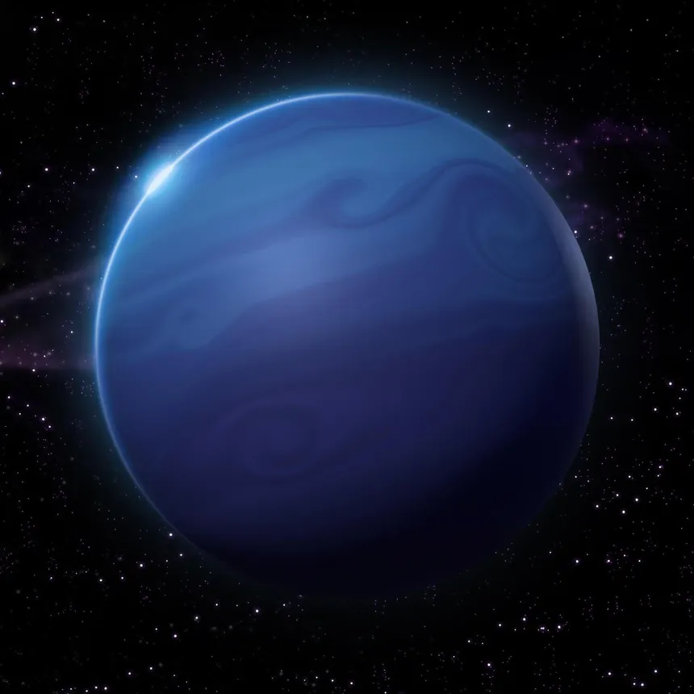
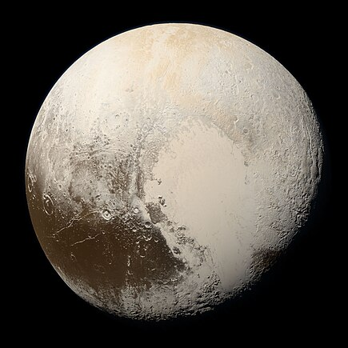
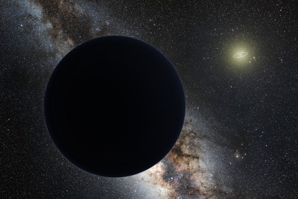

The order of the planets in the solar system, starting nearest the sun and working outward is the following: Mercury, Venus, Earth, Mars, Jupiter, Saturn, Uranus, Neptune and then the possible Planet Nine.
The solar system stretches outward from the sun, passing the four inner planets, the asteroid belt, the four outer planets and then the Kuiper Belt, the scattered disk and the Oort Cloud.
Types of planets in the solar system
The planets in our solar system can be divided into two main groups: terrestrial planets and gas giants.
Terrestrial Planets
The terrestrial planets are the four innermost planets in the solar system: Mercury, Venus, Earth, and Mars. These planets are called terrestrial because they are made up primarily of rock and metal, with solid surfaces you could walk on.
Gas Giants
The gas giants are Jupiter, Saturn, Uranus, and Neptune. These planets are much larger than the terrestrial planets and are made primarily of hydrogen and helium, with small rocky cores.
The Asteroid Belt
The asteroid belt is a region of space between Mars and Jupiter that contains many irregular-shaped bodies called asteroids. While there are millions of asteroids in the belt, most are relatively small, with the largest being Ceres, which is classified as a dwarf planet.
How did the solar system form?
Our solar system formed about 4.6 billion years ago from a dense cloud of interstellar gas and dust. The cloud collapsed, possibly due to the shockwave of a nearby exploding star, called a supernova. When this dust cloud collapsed, it formed a solar nebula - a swirling disk of material.
Watch This Video

The Sun
The Sun is the star at the center of the Solar System, providing energy for life on Earth.

Mercury
Mercury is the smallest planet in the Solar System and the closest to the Sun.

Venus
Venus is similar in structure to Earth but has a thick, toxic atmosphere.

Earth
Earth is the only astronomical object known to harbor life.

Mars
Mars is known as the "Red Planet" and has the largest volcano in the Solar System.

Jupiter
Jupiter is the largest planet in the Solar System, known for its Great Red Spot.

Saturn
Saturn is famous for its stunning rings made of ice and rock particles.

Uranus
Uranus is unique for its blue color and tilted axis, causing extreme seasonal changes.

Neptune
Neptune is known for its deep blue color and strong winds, the fastest in the Solar System.

Pluto
Pluto is a dwarf planet known for its icy surface and complex orbit.

Planet Nine
Planet Nine is a hypothetical planet that may exist in the outer Solar System.